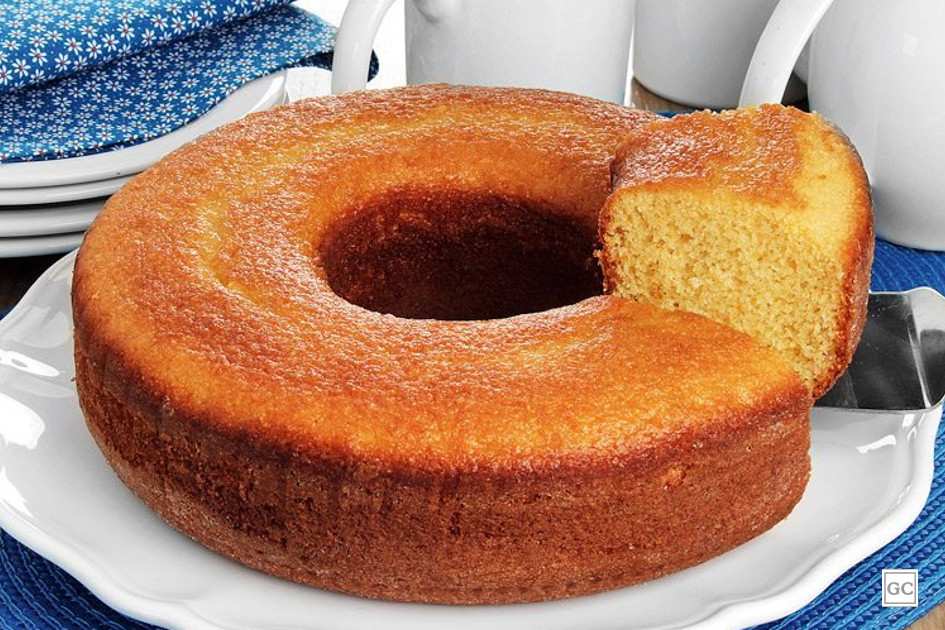

Bolinho de Fubá

Ingredientes
- 2 ovos
- 2 xícaras de leite
- 2 xícaras de açúcar
- 2 xícaras de fubá
- 2 xícaras de farinha de trigo
- 1 xícara de óleo
- 2 colheres das de chá de fermento em pó
- (use como medida a xícara de chá)
Modo de preparo
- Bata no liquidificador em velocidade alta, os ovos, o óleo, o leite e o açúcar
- Quando estiver homogêneo, vá acrescentando a farinha e o fubá
- A massa via começar a ficar grossa ,então ajude mexendo com uma colher
- Quando estiver tudo bem misturado acrescente o fermento em pó e misture bem
- Unte uma assadeira grande de buraco no meio com óleo e açúcar (de preferência cristal)
- Leve ao forno médio até dourar
- Cerca de 40 minutos
- Espete um palito ou faca para ter certeza de estar assado
- Quando estiver quase totalmente frio pode desenformar
Pagina inicial -
Receitas doces